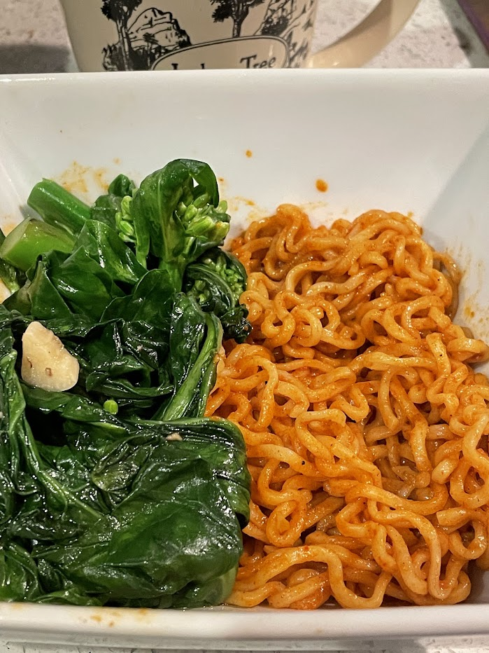

Curry ramen
Source: based on https://nourishedbycaroline.ca/coconut-curry-ramen-with-crispy-tofu/
Serving size:
Ramen noodles made with store-bought red curry paste in addition to the flavor packet that comes with the ramen. Served alongside Chinese broccoli